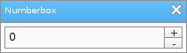

Löve Frames - The Numberbox Object
Return to Index
Information
The numberbox object allows the user to input a number into a textinput. It also comes with two buttons for increasing or decreasing the number.
Example Use
local frame = loveframes.Create("frame")
frame:SetName("Numberbox")
frame:SetSize(210, 60)
frame:CenterWithinArea(unpack(demo.centerarea))
local numberbox = loveframes.Create("numberbox", frame)
numberbox:SetPos(5, 30)
numberbox:SetSize(200, 25)

Event Callbacks
OnValueChanged - Called every time the object's calue changes
- Arguments passed: self [object], value [number]
- Arguments passed: self [object], value [number]
local numberbox = loveframes.Create("numberbox")
numberbox.OnValueChanged = function(object, value)
print("The object's new value is " ..value)
end
Methods
SetValue - Sets the object's value
- Returns 1 value: value [number]
- Returns 1 value: increaseamount [number]
- Returns 1 value: decreaseamount [number]
- Returns 1 value: max [number]
- Returns 1 value: min [number]
- Returns 2 values: minimum [number], maximum [number]
- Note: This method is used by the object internally. You should not use it unless you know what you are doing.
object:SetText(value[number])GetValue - Gets the object's value
- Returns 1 value: value [number]
local value = object:GetText()SetIncreaseAmount - Sets the object's increase amount
object:SetIncreaseAmount(amount[number])GetIncreaseAmount - Gets the object's increase amount
- Returns 1 value: increaseamount [number]
local increaseamount = object:GetIncreaseAmount()SetDecreaseAmount - Sets the object's decrease amount
object:SetDecreaseAmount(amount[number])GetDecreaseAmount - Gets the object's decrease amount
- Returns 1 value: decreaseamount [number]
local decreaseamount = object:GetDecreaseAmount()SetMax - Sets the object's maximum value
object:SetMax(max[number])GetMax - Gets the object's maximum value
- Returns 1 value: max [number]
local max = object:GetMax()SetMin - Sets the object's minimum value
object:SetMin(min[number])GetMin - Gets the object's minimum value
- Returns 1 value: min [number]
local min = object:GetMin()SetMinMax - Sets the object's minimum and maximum values
object:SetMinMax(min[number], max[number])GetMinMax - Gets the object's minimum and maximum values
- Returns 2 values: minimum [number], maximum [number]
local min, max = object:GetMinMax(min[number], max[number])ModifyValue - Modifies the object's value
- Note: This method is used by the object internally. You should not use it unless you know what you are doing.
object:ModifyValue(type[string])